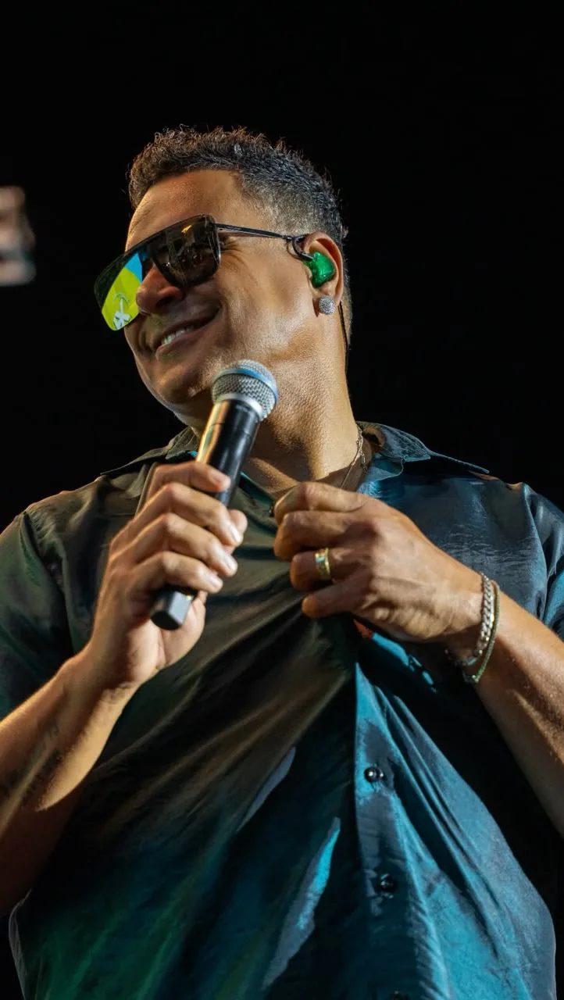
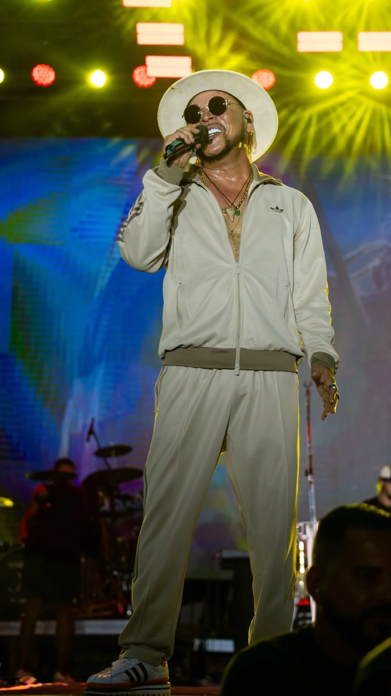

O Festival de Aniversário integrou a programação dos 64 anos de Vera Cruz e levou música à Orla de Mar Grande. O cartaz divulgado apresentou atrações para o sábado, 1º de agosto, e o domingo, 2 de agosto.
A festa reuniu diferentes ritmos e transformou a orla em ponto de encontro para moradores e visitantes, conectando a celebração municipal à paisagem de Mar Grande.
Programação divulgada
Sábado · 01/08
- 22h · Jau
- 00h · Escandurras
- 02h · Tony Salles
Domingo · 02/08
- 21h · Sorriso Maroto
- 23h · Xanddy Harmonia
Registros do palco
As fotografias mostram a energia das apresentações, o jogo de luzes e a proximidade entre artistas e público durante a programação comemorativa.


Celebrar a cidade também é reunir pessoas, ocupar os espaços públicos e criar novas lembranças.← Voltar ao Blog Conecta Vera Cruz